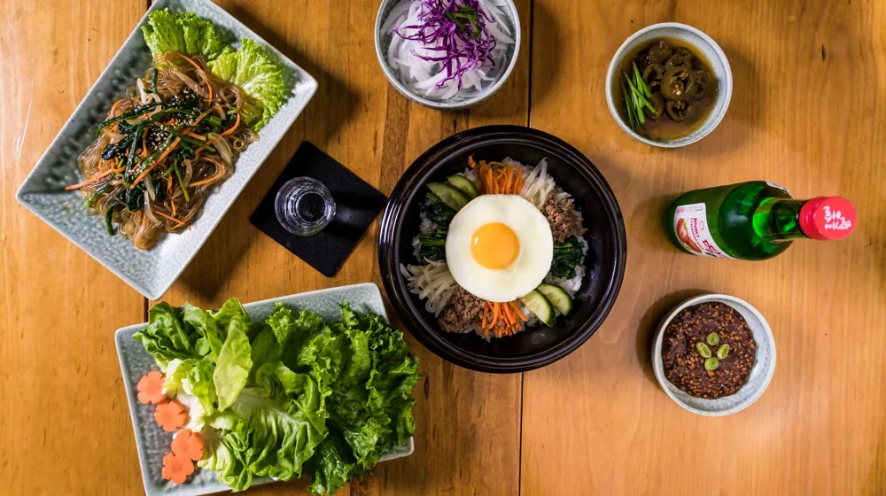

안동 종가음식 체험 예약 성공하는 법: 가격부터 실패 없는 꿀팁까지
사진: Luis Becerra Fotógrafo / Pexels (무료 이미지, 출처 표기)
안동 종가음식, 왜 특별할까?

안동은 수백 년의 세월을 품은 종가가 가장 잘 보존된 지역 중 하나입니다. 이곳의 음식은 단순히 한 끼를 채우는 식사를 넘어, 손님을 정성껏 대접하는 봉제사 접빈객(奉祭祀 接賓客)의 정신이 고스란히 담겨 있습니다. 인공 조미료를 배제하고 자연에서 얻은 천연 재료와 내림 씨간장으로 맛을 내 깊고 정갈한 풍미를 자랑합니다.
과거에는 문중의 귀한 손님만 맛볼 수 있었던 귀한 상차림이었지만, 최근에는 일반 여행객도 예약만 하면 쉽게 경험할 수 있는 체험관과 식당이 늘어났습니다. 자극적인 외식에 지친 현대인들에게 몸과 마음을 편안하게 해주는 건강한 대안으로 주목받고 있습니다.
안동 대표 종가음식 체험처 3곳 비교
안동에서 종가음식을 경험할 수 있는 대표적인 세 곳을 비교해 드립니다. 공간의 분위기와 제공하는 메뉴의 성격이 각기 다르므로 취향에 맞춰 선택해 보세요.
각 체험처의 세부 가격대와 운영 방식은 계절이나 내부 사정에 따라 변동될 수 있습니다. 2026년 기준 정확한 금액과 예약 가능 여부는 방문 전 해당 기관 또는 안동시 관광포털을 통해 한 번 더 확인하시길 권장합니다.
실패 없는 종가음식 예약 팁과 절차
종가음식은 재료 수급과 정성스러운 조리 과정 때문에 일반 대중식당처럼 당일에 찾아가서 바로 먹기 어렵습니다. 예약 실패를 막기 위해 다음 세 가지 사항을 반드시 체크하세요.
- 최소 일주일 전 예약은 필수: 특히 역사적 정찬을 재현하는 수운잡방의 경우, 조리 준비 기간이 필요해 일주일 전에 예약을 마쳐야 안전합니다.
- 최소 인원 기준 확인하기: 종가음식 정찬 체험은 4인 또는 8인 이상의 단체 기준 조건이 있는 경우가 많습니다. 2인 여행객이라면 기존 예약 단체팀에 합류할 수 있는지 전화를 통해 미리 문의해 보세요.
- 알레르기 유무 미리 알리기: 전통 식재료 중 견과류나 천연 향신료가 자주 쓰입니다. 먹지 못하는 음식을 예약 단계에서 미리 전달하면 대체 식재료로 조율해 주기도 합니다.
종가 체험 시 알아두면 좋은 세심한 매너
종가음식 체험 공간은 실제로 종손과 종부가 거주하는 고택인 경우가 많습니다. 서로가 기분 좋은 경험을 위해 간단한 에티켓을 지켜주는 것이 좋습니다.
먼저 식사 시작 시간을 철저하게 지켜야 합니다. 종가음식은 적당한 온도를 유지한 채 상에 올리는 타이밍이 생명이기 때문입니다. 또한, 고택 내부의 사당이나 안채처럼 사적인 구역은 출입이 제한되어 있으므로 안내받은 식사 공간 중심으로 머무는 매너가 필요합니다.
🔗 이 글도 함께 보면 좋아요: 집에서 만드는 떠먹는 막걸리, 이화주 키트 실패 없이 성공하는 법
관련 추천 상품
이 포스팅은 쿠팡 파트너스 활동의 일환으로, 이에 따른 일정액의 수수료를 제공받습니다.
자주 묻는 질문(FAQ) (탭하면 펼쳐져요)
Q1. 안동 종가음식은 일반 한정식과 무엇이 다른가요?
A. 종가음식은 인공 조미료를 배제하고 집안 대대로 내려오는 간장, 된장, 초 등을 사용하여 원재료 본연의 맛을 살립니다. 제례 문화와 손님맞이 전통에 기반하여 맛이 담백하고 정갈한 것이 특징입니다.
Q2. 혼자나 둘이서 여행할 때도 예약이 가능한가요?
A. 일반 식당 형태인 '예미정'은 2인 식사가 원활하게 가능합니다. 반면 고조리서 체험관 등은 최소 인원(보통 4인 이상) 제한이 있는 경우가 많아, 사전 문의를 통해 다른 팀과의 합류 여부를 조율해야 합니다.
Q3. 고택에서 꼭 숙박을 해야만 종가 음식을 먹을 수 있나요?
A. 그렇지 않습니다. 농암종택처럼 숙박객 중심의 아침 밥상을 제공하는 곳도 있지만, 수운잡방 체험관이나 종가음식 전문점은 숙박 없이 식사만 예약하여 편리하게 이용하실 수 있습니다.
한눈에 보는 상품 목록
명인 안동소주
담백하고 정갈한 안동 종가음식의 기름진 맛을 깔끔하게 잡아주는 대표적인 안동 전통 명주입니다.
안동 간고등어 전통 세트
안동 종가 상차림에서 빠질 수 없는 필수 생선 반찬으로, 짭조름하고 담백한 맛이 일품입니다.